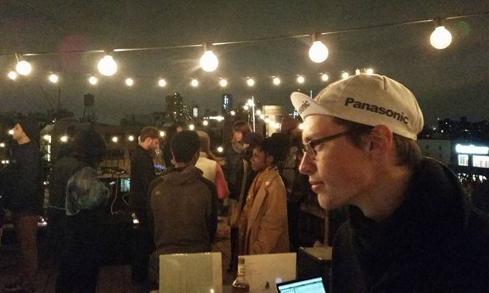

Jordan Bortner

Photo credit: Ryan Pivovar, 2015
Jordan Bortner is an American artist, electronic musician, and composer. He graduated magna cum laude from the University of North Texas, having studied music compostion. In 2013, he moved from Denton, Texas to Brooklyn, New York. In addition to creating various types of music, he also performs as a visual projectionist at live events, and makes digital artwork and videos. He maintains projects under various aliases, dividing his body of work across multiple genres. From 2018-2020, he lived and worked teaching English in Seoul, South Korea, after which he returned to the USA to continue his creative career.